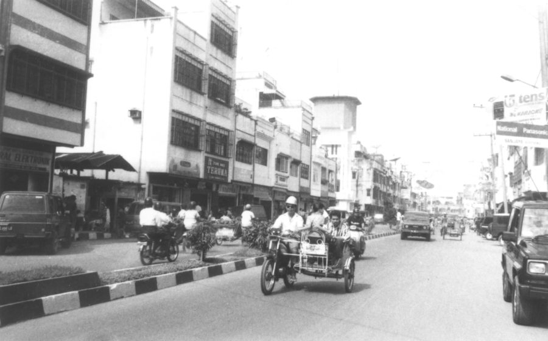
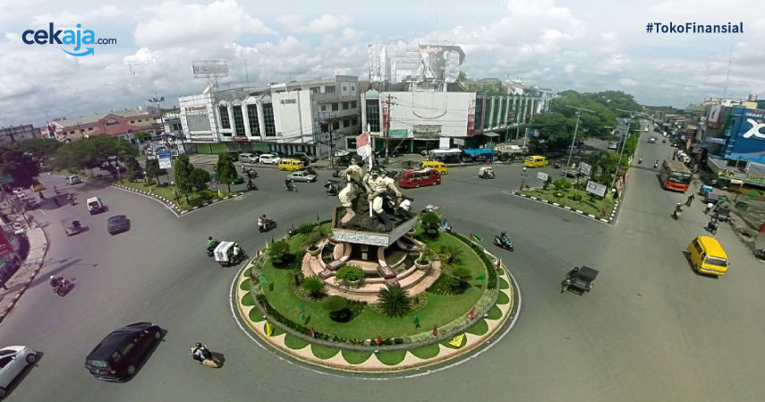
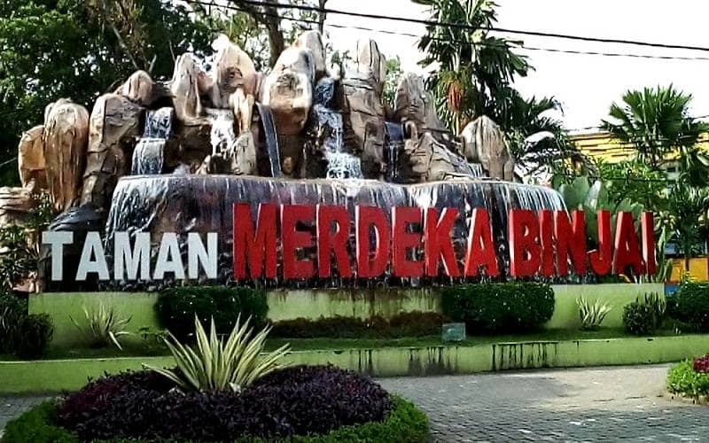
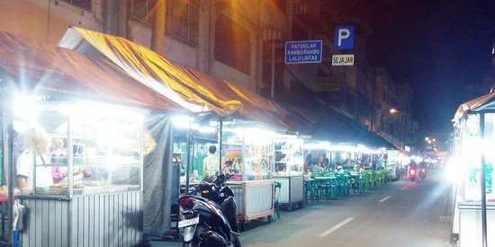
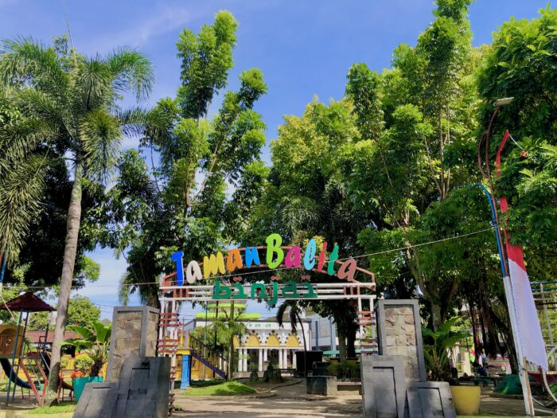

Sejarah

Kota Binjai memiliki sejarah yang berakar dalam perkembangan ekonomi
dan perdagangan di wilayah Sumatera Utara. Pada masa silam, Binjai
terletak di antara Sungai Mencirim di sebelah timur dan Sungai
Bingai di sebelah barat, berada di antara dua kerajaan Melayu, yaitu
Kesultanan Deli dan Kerajaan Langkat.
Asal muasal nama "Binjai" berasal dari sebuah kampung kecil di
pinggir Sungai Bingai. Upacara adat pembukaan kampung ini diadakan
di bawah sebatang pohon Binjai yang rindang di Kelurahan Pekan
Binjai. Pohon Binjai tersebut kemudian menjadi cikal bakal
perkembangan kota, menjadi pelabuhan yang ramai dikunjungi oleh
tongkang-tongkang dari Stabat, Tanjung Pura, dan Selat Malaka.
Ada dua versi tentang asal kata "Binjai." Salah satunya mengatakan
bahwa "Binjai" berasal dari bahasa Melayu, mengacu pada jenis pohon
yang buahnya dapat dimakan. Versi lain menyatakan bahwa kata
"Binjai" berasal dari bahasa Karo, yang berarti "bermalam di sini."
Hal ini terkait dengan peran kota Binjai sebagai tempat bermalam
bagi pedagang dari dataran tinggi Karo yang menuju ke pesisir
Langkat.
Pada masa pendudukan Belanda, Binjai menjadi pusat pertahanan
melawan upaya kolonisasi. Pada tanggal 17 Mei 1872, terjadi
pertempuran sengit antara masyarakat setempat dan Belanda, yang
kemudian ditetapkan sebagai hari jadi Kota Binjai. Pada tahun 1917,
Binjai dijadikan Gemeente oleh Pemerintah Belanda.
Selama pendudukan Jepang (1942-1945) dan era kemerdekaan Indonesia,
Binjai mengalami berbagai perubahan dalam kepemimpinan dan status
administratifnya. Pada tahun 1956, Binjai menjadi kota otonom
setelah sebelumnya menjadi kota administratif kabupaten Langkat.
Dalam perkembangannya, Kota Binjai terus membenahi diri dan
mengalami pemekaran wilayah. Pada tahun 1986, wilayah Binjai
diperluas, dan sejak itu, kota ini terus berkembang sebagai pusat
ekonomi, perdagangan, dan administratif di Provinsi Sumatera Utara.
Geografis

Letak geografis Binjai 03°03'40"–03°40'02" LU dan
98°27'03"–98°39'32" BT. Ketinggian rata-rata adalah 28 meter di atas
permukaan laut. Sebenarnya, Binjai hanya berjarak 8 km dari Medan
bila dihitung dari perbatasan di antara kedua wilayah yang
dipisahkan oleh Kabupaten Deli Serdang. Jalan Raya Medan Binjai yang
panjangnya 22 km, 9 km pertama berada di dalam wilayah Kota Medan,
Km 10 sampai Km 17 berada dalam wilayah Kabupaten Deli Serdang dan
mulai Km 17 adalah berada dalam wilayah Kota Binjai.
Ada 2 sungai yang membelah Kota Binjai yaitu Sungai Bingai dan
Mencirim yang menyuplai kebutuhan sumber air bersih bagi PDAM Tirta
Sari Binjai untuk kemudian disalurkan untuk kebutuhan penduduk kota.
Namun di pinggiran kota, masih banyak penduduk yang menggantungkan
kebutuhan air mereka kepada air sumur yang memang masih layak
dikonsumsi.
Wisata
1. Taman Merdeka

Taman Merdeka, menjadi lokasi favorit warga untuk melewati malam.
Tanah Lapang Merdeka merupakan sebuah taman asri dengan suasana
cukup nyaman. Berada di pusat kota Binjai membuat Taman Merdeka
mudah diakses oleh wisatawan.
Berada persis di depan kantor Walikota, kini Taman Merdeka Binjai
menjadi lokasi hiburan di sore hari. Lokasi ini juga menjadi
tempat favorit berolahraga, rekreasi, dan berkumpul bagi warga.
Tertata rapi serta terawat cukup baik menjadi daya tarik destinasi
ini bagi wisatawan.
2. Pasar Kaget Binjai

Pasar ini terkenal dengan ramainya para pedagang yang menjual
produk dan jasanya dengan harga rakyat tapi kualitas dan rasanya
super nikmat, hihi. Para pedagang akan mulai buka lapak sekitar
pukul 5 sore hingga 12 malam tiap harinya, jadi di jam 4 sore para
pedagang sudah mulai mempersiapkan ini dan itu. Terkhususnya di
hari Jumat, Sabtu, dan Minggu Pasar banjai akan ramai dengan
anak-anak milenial yang mencoba melepas penat dengan teman
senasibnya.
Adapaun para pedagangnya menjual berbagai macam pernak pernik,
fashion, dan yang menjadi favorit para pengunjung adalah wisata
kulinernya karena menyajikan berbagai macam makanan dan minuman
unik dan lezat. Kurang lebih jumlah para pedagang berkisar ratusan
kaki lima saat ini. Dan yang mendominasi memang si para pedagang
kulinernya.
3. Taman Balita

Taman Balita Binjai, yang terletak di Jl. Tangsi, Kecamatan Binjai
Kota, Sumatera Utara, menawarkan pengalaman wisata yang
mengasyikkan bagi keluarga dengan anak-anak kecil. Dengan suasana
yang nyaman dan beragam permainan yang disediakan, taman ini
menjadi destinasi ideal untuk menghabiskan waktu bersama keluarga,
terutama saat akhir pekan.
Taman Balita Binjai tidak hanya menawarkan keindahan alam dengan
pohon yang rindang. Tetapi juga menyediakan berbagai wahana
permainan yang dapat membuat si kecil terkesan. Dari seluncuran
yang menghibur hingga ayunan yang menyenangkan, anak-anak dapat
mengeksplorasi berbagai permainan dengan penuh kegembiraan.